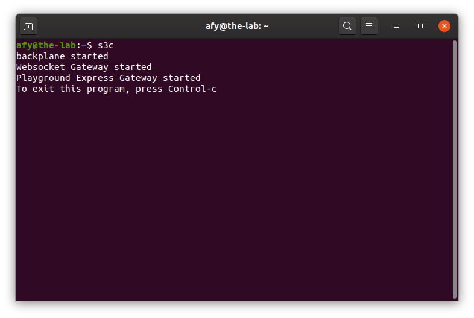
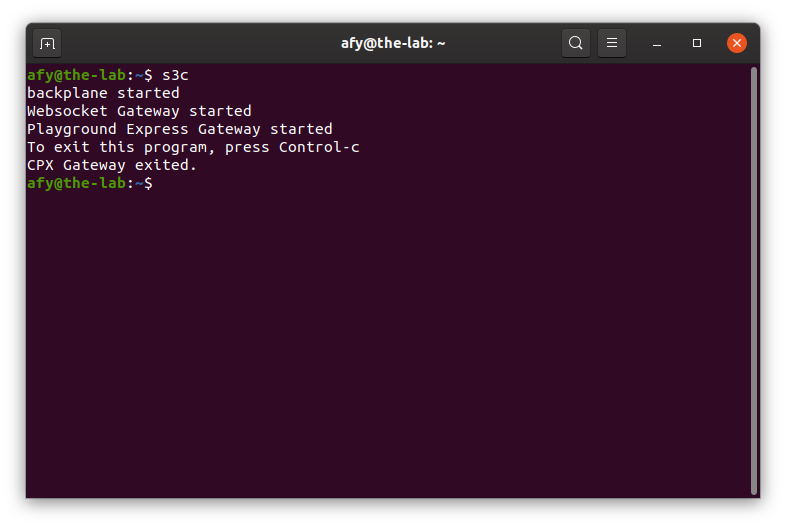
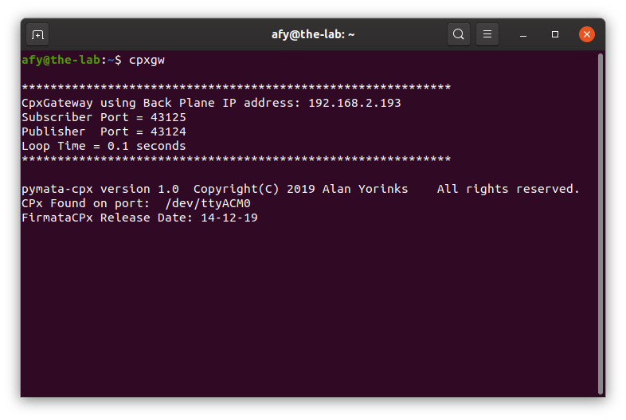
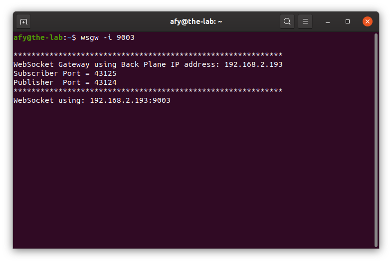

Circuit Playground Express
Starting The OneGPIO Server For The Circuit Playground Express
Plug the Circuit Playground Express into a USB connector on your computer
Next, open a terminal window and type:
s3c

This command automatically starts the Python Banyan Backplane and both the Banyan WebSocket and Banyan Circuit Playground Express Gateways.
If you remove the USB cable after starting s3c, or if you have forgotten to plug in the cable before starting s3c, you will see something similar to the following:

Here, s3c tried to start the Circuit Playground Express Gateway but detected an error and aborted it.
Visit "A Peek Under The Hood" for more information about the Backplane and Gateways.
Troubleshooting
Only use a high-quality USB cable. Verify that you properly connected the cable to both your computer and the Circuit Playground express. If s3c detects an error in either the backplane or either of the two gateways, it will shut itself down.
To troubleshoot why this may be happening, open a new terminal window and type:
backplane
You should see a similar output, as shown below, indicating that the backplane is running correctly. The IP address does not need to match the one shown.

Next, open an additional terminal window and type:
cpxgw

You should see a window similar to the one shown above. Here, the screenshot displays the version of pymata-cpx and the release date of FirmataCPx.
Next, open a third terminal window and type:
wsgw -i 9003

You should see a window similar to the one shown above.
If there are exceptions or errors in any of the terminal windows, create an issue against the s3-extend distribution pasting any error output into the issue comment.
Copyright (C) 2019-2021 Alan Yorinks All Rights Reserved